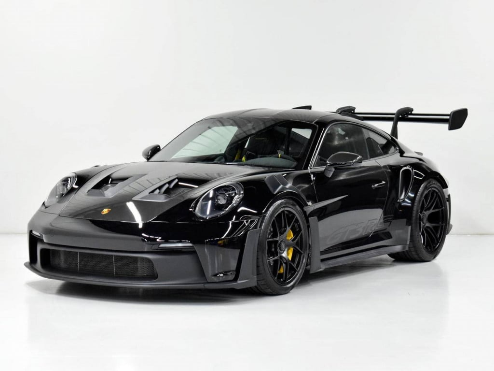

Porsche 911
Porsche is love
What is Porsche
Porsche is a renowned German luxury automobile manufacturer, founded by Ferdinand Porsche in 1931, that specializes in high-performance sports cars, SUVs, and sedans, known for its iconic models like the 911, superior engineering, and global prestige. Headquartered in Stuttgart, the company is a leader in automotive innovation and racing heritage, and its vehicles are recognized worldwide for their design, dynamics, and performance
Key Characteristics
- High-Performance Sports Cars:
Porsche is synonymous with sports cars, producing vehicles renowned for their power, speed, and handling.
- Luxury and Prestige:
The brand represents modern luxury, prestige, and high-end automotive design.
- Innovation and Engineering:
Porsche is celebrated for its engineering prowess, including innovations in flat-four engines, all-wheel-drive systems, and suspension technology
- Racing Legacy:
The brand has a deep and successful history in motorsport, with iconic race cars and a significant influence on the automotive world
- Iconic Models:
The Porsche 911 is one of its most famous and enduring models, known for its unique silhouette and continuous evolution
The Porsche 911 model series (pronounced Nine Eleven or in German: Neunelf) is a family of German two-door, high performance rear-engine sports cars, introduced in September 1964 by Porsche AG of Stuttgart, Germany, and now in its eighth generation. All 911s have a rear-mounted flat-six engine, and usually 2+2 seating, except for special 2-seater variants. Originally, 911s had air-cooled engines, and torsion bar suspension, but the 911 has been continuously enhanced, and evolved across generations. Though the 911 core concept has remained largely unchanged, water-cooled engines were introduced with the 996 series in 1998, and front and rear suspension have been replaced by Porsche-specific MacPherson suspension up front, and independent multi-link rear suspension.
